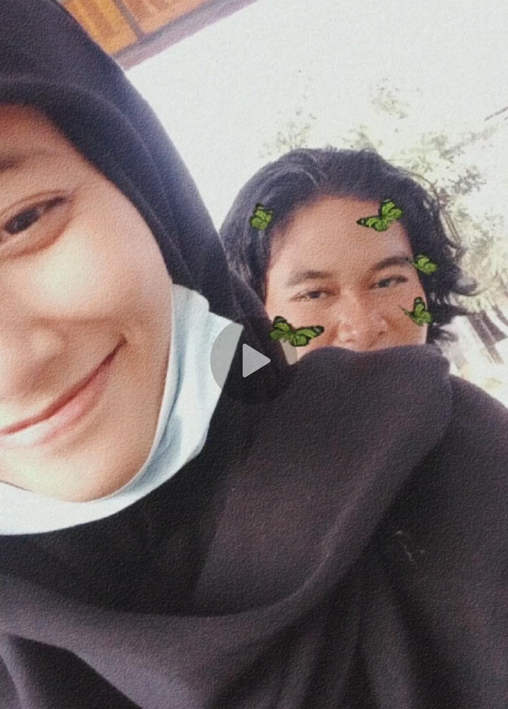
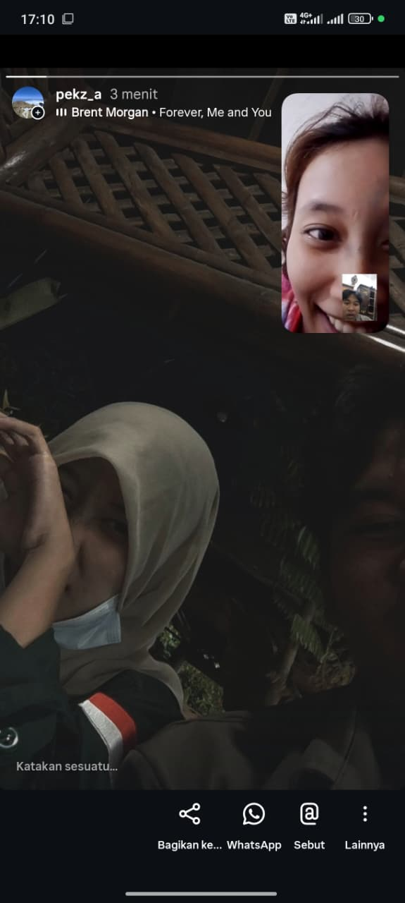
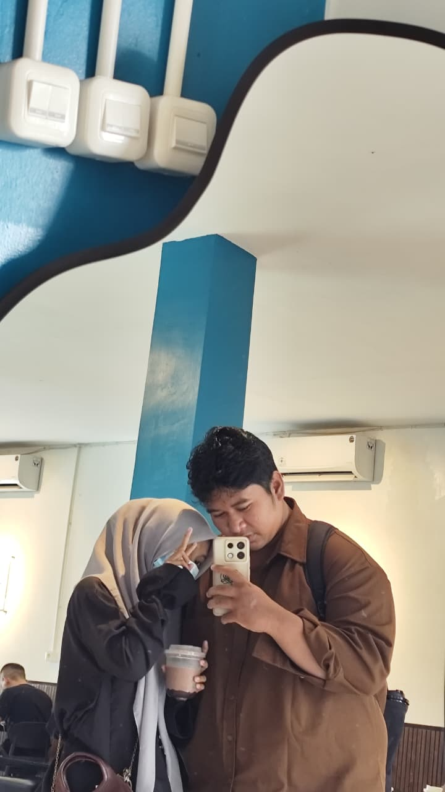

Mas membuat halaman kecil ini khusus untuk mengingatkan kita kembali, tentang mengapa kita sejauh ini bertahan. Scroll ke bawah ya...
Ingat gak waktu pertama kali kita kenal? Dunia rasanya biasa aja, sampai akhirnya kamu datang membawa warna baru yang gak pernah aku duga sebelumnya.


Dari sekadar teleponan malam-malam sampai cerita hal gak penting yang bikin kita ketawa lepas. Bahagiaku sesederhana melihat kamu tersenyum karena aku.
Kita pernah melewati banyak hal, belajar memahami isi kepala masing-masing, dan pelan-pelan membangun mimpi yang ingin kita tuju bersama.

Halo Sayangku,
Mas tau belakangan ini mas bikin kamu kesal dan kecewa. mas bener-bener minta maaf ya atas kesalahan atau kelalaian yang sering mas lakukan. mas sadar sikap mas egois dan kurang mengerti posisi kamu.
Mengingat kembali semua hal indah yang udah kita lewatin di atas, mas bener-bener gak mau kehilanganmu hanya karena kebodohan mas. mas janji akan belajar lebih sabar dan lebih dewasa lagi buat hubungan kita.
Kamu masih mau kan berproses bareng mas? I promise to be a better person for you.